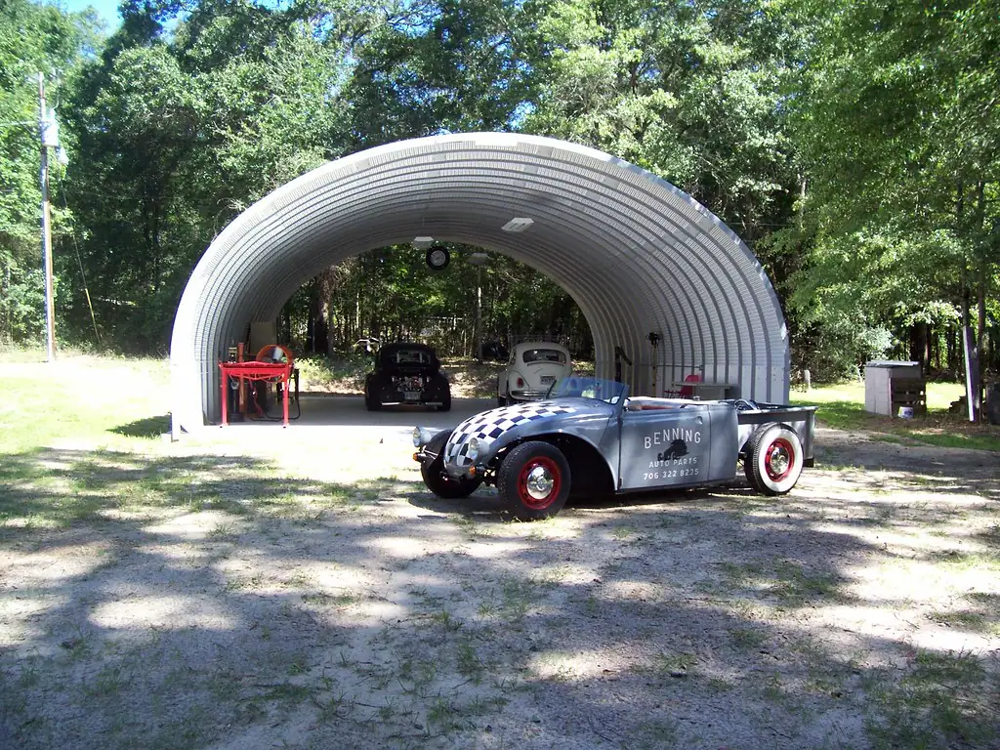

Care & Storage
A classic rewards gentle, regular care. Here is how to put a car away for winter, look after the battery, mind the fluids and tires, choose a cover, and safely wake it again come spring.

Safety first: Before any hands-on care: let a hot engine and exhaust cool fully before touching them, never run an engine in a closed garage (exhaust fumes are deadly), use jack stands rather than a jack alone if you must get underneath, and keep fuel and batteries away from flames and sparks. For anything beyond basic care, consult a qualified mechanic.
A little care goes a long way
A classic car rewards gentle, regular attention more than almost any other possession. These are older machines, built in a different age, and they ask for a bit of understanding in return for years of pleasure. The good news is that most of what keeps a classic happy is simple, satisfying, and well within any owner's reach. You do not need to be a mechanic; you need only be attentive and a little bit affectionate toward the car, and most of the rest follows naturally.
Putting a car away for winter
In much of the country, a classic sleeps through the cold months, and how you tuck it in makes all the difference to how it wakes in spring. A few hours of care in the fall prevents a great many headaches later.
- Wash and dry the car thoroughly, and apply a coat of wax to protect the paint through its rest.
- Change the oil if it is due; old, dirty oil left sitting all winter is harder on an engine than fresh.
- Fill the fuel tank and add a fuel stabilizer to prevent the gas from going stale and gumming the system.
- Inflate the tires to a little above their normal pressure to help prevent flat spots from months of sitting.
- Place the car on a breathable cover, ideally in a dry garage, and leave a note on the wheel reminding you of anything you disconnected.
Tip: Lay a sheet of cardboard or a moisture barrier under the car on a bare concrete floor. Concrete can wick damp upward, and a simple barrier keeps the underside drier through a long winter.
Looking after the battery
A battery left connected over a long storage will slowly drain and can be ruined by the cold. There are two gentle solutions. The simplest is to disconnect the battery entirely — remove the negative cable first — and store it somewhere cool and dry, off a concrete floor. Better still is to connect a "battery tender" or trickle charger, a small, inexpensive device that keeps the battery topped up without overcharging it. Either way, a little attention here saves the expense and bother of a dead battery come spring.
Fluids, tires, and the small things
Beyond the battery, a few other systems appreciate attention before a long rest.
- Coolant should be at the right level and mix so it cannot freeze; a qualified mechanic can test it if you are unsure.
- Brake fluid attracts moisture over time; have the brakes checked periodically by a professional, as they are safety-critical.
- Tires age whether driven or not; check them for cracking and correct pressure, and know that very old tires should be replaced for safety regardless of tread.
- Rodents love a quiet stored car; a few deterrents and a peek now and then save a chewed wiring harness.
Choosing and using a car cover
A good cover protects a classic from dust, light, and the small knocks of a busy garage. The key is to choose a breathable cover, which lets moisture escape rather than trapping it against the paint. A cheap plastic tarp can do more harm than good, holding condensation that encourages rust and mildew. Make sure the car is clean and fully dry before covering it, as dust trapped under a cover can scratch, and grit against paint under a snug cover is a common cause of fine scratches.
For a car stored outdoors, a heavier weatherproof-yet-breathable cover is worth the investment, well secured against the wind. Indoors, a lighter dust cover is usually plenty. Either way, lift and check the car now and then through its rest, so any problem is caught early rather than discovered in spring.
Everyday care between drives
Between the big seasonal jobs, a classic appreciates small, regular attention that keeps it healthy and ready to enjoy. The single best thing you can do for most classics is simply to drive them gently and regularly. Cars, like people, do better for a little exercise; a car that sits for months develops flat-spotted tires, stale fuel, seized parts, and a flat battery, while one driven now and then stays limber and reveals small problems before they grow.
Keep an eye on the simple things. Check the oil and coolant levels before a drive, glance at the tires for pressure and cracks, and listen for any new noises. Keep the car clean, as dirt holds moisture against the metal and invites rust. A few minutes of attention before each outing, and a quick look over afterward, will catch most troubles while they are still small and cheap to fix.
Washing and detailing with care
A classic's paint and chrome are precious and often decades old, so wash them with a gentle hand. Use plenty of clean water and a soft wash mitt, work from the top down, and rinse often so grit does not scratch. Dry with a soft, clean cloth rather than letting the car air-dry to water spots. Avoid harsh automatic car washes, whose stiff brushes can scratch old paint and catch delicate trim.
- Rinse the car first to float off loose grit before you touch the paint.
- Wash with a soft mitt and a bucket of mild car-wash soap, rinsing the mitt often.
- Rinse thoroughly and dry with a soft microfiber or chamois cloth.
- A coat of quality wax a few times a year protects the paint and brings up a deep shine.
- Treat chrome gently with a dedicated polish, and clean glass and interior with appropriate mild products.
Keeping good records
One of the most valuable and satisfying habits an owner can keep is a simple logbook. Note every oil change, every repair, every part fitted, with dates and mileage. Keep receipts and, where you can, photographs. This record does several good things at once: it reminds you what has been done and what is due, it helps a mechanic understand the car, and it adds real value and interest to the car for the day you show it or pass it on.
A well-documented classic tells its own story, and that story is part of what makes these cars so cherished. A shoebox or a simple folder is all it takes. Years from now, that record of your care will be among the most treasured things that travels with the car — proof of a machine that was loved, not merely owned, and a gift to whoever is lucky enough to be its next caretaker.
Storing in different climates
Where you live shapes how you store a classic. In the cold North, the enemies are freezing fluids, road salt, and a long idle winter; the full winter-storage routine above is essential, and keeping the car away from salted roads entirely is wisest. In the hot, dry Southwest, the sun is the chief foe, fading paint and cracking rubber and interiors, so shade, a cover, and interior protection matter most, while rust is less of a worry.
In humid and coastal regions, moisture and salt air are the great threats, driving rust even on a car that never sees rain; good ventilation, moisture absorbers in the garage, and diligent washing of the underside are key. Wherever you are, the principles are the same — keep the car clean, dry, and protected from its local extreme — but the emphasis shifts. Knowing your climate's particular challenge lets you focus your care where it matters most, and a local club is a goldmine of region-specific wisdom.
Waking a car for spring
Bringing a classic back to life after its winter sleep is one of the happiest days of the year. Take it gently and run through a calm checklist rather than simply turning the key and roaring off.
- Reconnect and check the battery, and reinflate the tires to their proper pressure.
- Look underneath and around the car for any leaks, nests, or problems that appeared over winter.
- Check the fluid levels — oil, coolant, brake fluid — before starting.
- Start the engine and let it warm gently, listening and watching the gauges before you drive.
- Take a slow first drive close to home, testing the brakes carefully at low speed, before venturing further.
- If anything feels, sounds, or smells wrong, stop and investigate — or call a mechanic — before driving on.
With a little seasonal care, a classic car will give you decades of joy and be ready for every show and cruise the warm months bring. None of it is difficult or costly; it is simply the steady, affectionate attention that these grand old machines have earned, and that keeps them rolling for the generations still to come. And when the next event rolls around, the Car Show Guide will have you set for a perfect day out.